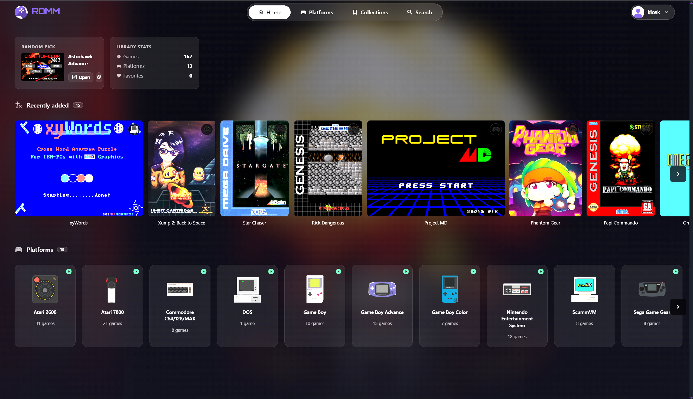

RomM Personal Server

This project involves organizing and managing a personal game library using RomM. The project combines server management, storage, networking, and self-hosted software.
Computer Science and Cybersecurity Student
| Project | Technology | Category | Skills Used |
|---|---|---|---|
| Personal Portfolio | HTML and CSS | Web Development | HTML5, CSS, Semantic Elements, Responsive Design |
| Library Checkout System | Java | Programming | Classes, Objects, Methods |
| Network Security Lab | pfSense | Cybersecurity | Firewalls, Networking, Security |
| Statistics Project | R | Statistics | Data Analysis, Correlation, Regression |
| Programming Exercises | Java | Programming | Loops, Arrays, Inheritance |

This project involves organizing and managing a personal game library using RomM. The project combines server management, storage, networking, and self-hosted software.
This experiment demonstrates how the CSS
!important declaration affects
competing style rules.
The normal CSS rule attempts to make the link
red, but the !important declaration
overrides that rule and makes the link dark blue.
This experiment demonstrates different ways to center an element using CSS.
The box is centered horizontally and vertically using CSS Flexbox.